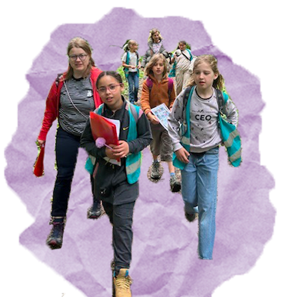
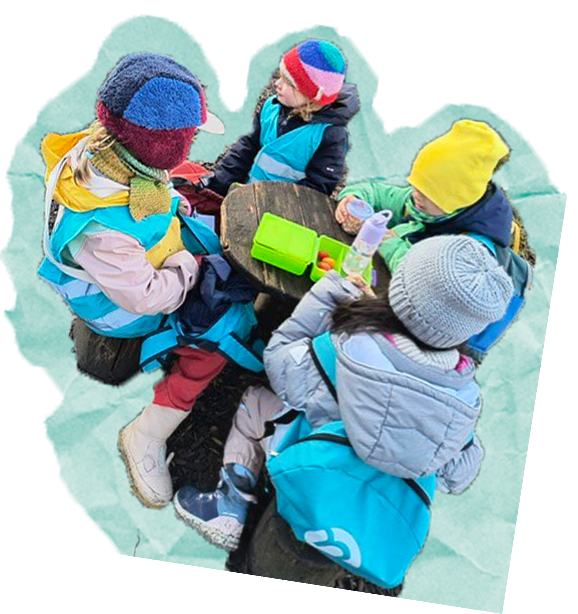

<!DOCTYPE html>
<html lang="en"></html>
<head>
	<link href="css/reset.css" rel="stylesheet" />
	<meta name="viewport" content="width=device-width, initial-scale=1.0" />
	<title>Basisschool Nieuwland</title>
	<link href="css/style.css" rel="stylesheet" />
	<link href="css/visie.css" rel="stylesheet" />
	<script type="module" src="./js/visie.js" defer></script>
</head>
<body class="start-body">
	<!-- <canvas id="canvas"> </canvas> -->

	<header>
		<p style="background-image: url('images/ripped-paper-top_home.png');"></p>
		<div class="wrapper">
			<div class="nav-top">
				<a href="index.html">
					
				</a>
			</div>
			<!-- https://www.w3schools.com/howto/howto_css_dropdown.asp -->
			<div class="navigation">
					<div class="dropdown_1">
					<button class="dropbtn_1">Onze Visies</button>
					<div class="dropdown-content_1">
						<a href="visie.html">Visie</a>
						<a href="brede_school.html">Brede School</a>
					</div>
				</div>

				<div class="dropdown_2">
					<button class="dropbtn_2">Algemene Informatie</button>
					<div class="dropdown-content_2">
						<a href="praktische_informatie.html">Praktische Informatie</a>
						<a href="inschrijven.html">Inschrijven</a>
                        <a href="klassen.html">Klassen</a>
					</div>
				</div>
				<a href="nieuws.html" class="Nieuws">Nieuws</a>
				<a href="contact.html" class="Contact">Contact</a>
			</div>

		</div>

			<div class="title">
			<h1>Visie</h1>
		</div>

	<div id="filter">
		<button class="button-1">Pedagogisch Project</button>
		<button class="button-2">Oriëntatie op de wereld</button>
		<button class="button-3">Zin in leren! Zin in leven!</button>
	</div>

	<div id="content"></div>

	<div class="container">

		<div class="orientatie-1">
			<!-- <div class="o-title-1"> -->
				<h2>Mens</h2>
			<!-- </div> -->
			
			<div class="o-vakje-1">
				<p>Veel van onze kinderen groeien op in stressvolle omstandigheden en leren niet vanzelf hun emoties goed te uiten. Daarom investeren we als school extra in emotieregulatie en leren we kinderen de taal van emoties. Om schoolse achterstanden, demotivatie en uitval te voorkomen, versterken we het zelfbeeld en zelfvertrouwen van onze leerlingen. Via onze pedagogische en didactische keuzes willen we bovendien hun leerzin en motivatie blijven voeden.</p>
			</div>
		</div>

		<div class="orientatie-2">
			<div class="o-title-2">
				<h2>Maatschappij</h2>
			</div>
			
			<div class="o-vakje-2">
				<p>Omdat veel kinderen opgroeien in een omgeving met weinig actieve rolmodellen, brengen we hen in contact met diverse beroepen en inspirerende voorbeelden.Sociaal-cultureel: In onze superdiverse samenleving leren we kinderen samenleven in verscheidenheid, met aandacht voor zowel verschillen als gelijkenissen. We zien die diversiteit als een meerwaarde en benutten ze in ons aanbod.Politiek-juridisch: We geven kinderen inzicht in onze democratie en leren hen hoe ze kunnen deelnemen aan het maatschappelijk debat, zodat ze later actief kunnen opkomen voor hun rechten en belangen.</p>
			</div>
		</div>

		<div class="orientatie-3">
			<div class="o-title-3">
				<h2>Ruimte: verkeer en mobiliteit</h2>
			</div>
			<div class="o-vakje-3">
				<p>Door het drukke verkeer leggen we de nadruk op verkeersveiligheid, zodat kinderen zich veilig te voet en met de fiets kunnen verplaatsen. We maken optimaal gebruik van het openbaar vervoer bij uitstappen in het BHG, zodat kinderen leren zich zelfstandig te verplaatsen en hun leefwereld verbreden. Mobiliteit koppelen we aan milieueducatie, waarbij we hen bewust maken van hun ecologische impact en duurzame keuzes stimuleren.</p>
			</div>
		</div>

		<div class="orientatie-4">
			
			<div class="o-title-4">
				<h2>Tijd</h2>
			</div>
			<div class="o-vakje-4">
				<p>Om mee te kunnen in een snel veranderende samenleving, leren we kinderen hun dagelijks leven organiseren, beginnend bij tijdsbesef. Daarnaast laten we hen kennismaken met historische gebeurtenissen, zodat ze onze maatschappij beter begrijpen en bewuster over de toekomst kunnen nadenken.</p>
			</div>
		</div>

		<div class="orientatie-5">
			
			<div class="o-title-5">
				<h2>Natuur: levende natuur</h2>
			</div>
			<div class="o-vakje-5">
				<p>Onze kinderen groeien op in een verstedelijkt gebied en hebben vaak beperkte voorkennis over de natuur. Daarom laten we hen actief en ontdekkend kennismaken met diverse biotopen en organismen, binnen en buiten het BHG, zodat deze ervaringen blijven hangen.</p>
			</div>
		</div>

		<div class="orientatie-6">
			<div class="o-title-6">
				<h2>Natuur: gezondheid</h2>
			</div>
			<div class="o-vakje-6">
				<p>De levensomstandigheden van onze leerlingen houden verschillende gezondheidsrisico’s in (zowel fysiek als mentaal). Daarom is een doorgedreven gezondheidsbeleid op school van groot belang. Ook bewegingsopvoeding is hier een wezenlijk onderdeel van.</p>
			</div>
		</div>

		<div class="orientatie-7">
			
			<div class="o-title-7">
				<h2>Natuur: Milieu</h2>
			</div>
			<div class="o-vakje-7">
				<p>Kinderen zien in hun omgeving weinig voorbeelden van respectvol gedrag naar milieu. Zo wordt er bijvoorbeeld weinig gesorteerd en slingert er veel afval in de omliggende straten. We willen dat onze leerlingen opgroeien tot burgers die de wereld beter maken en dus is het belangrijk om vanuit de school voldoende klemtoon te leggen op milieu-educatie en ecologie.</p>
			</div>
		</div>

		<div class="orientatie-8">
			<div class="o-title-8">
				<h2>Techniek</h2>
			</div>
			<div class="o-vakje-8">
				<p>Onze wereld evolueert razendsnel. Techniek vormt het sleutelbegrip om de toekomst vorm te geven. Gezien de ecologische, maatschappelijke uitdagingen is het belangrijk om techniek een plaats te geven. Wij willen dat onze kinderen deze evolutie begrijpen en hierop kunnen anticiperen.</p>
			</div>
		</div>
	</div>


	<!-- hier moet call to action voor inschrijven -->
	

	<div class="footer">
		<div class="wrapper">
			<div ></div>

			<div class="icon-line-1"><p >0498596556</p></div>

			<div class="icon-line-1"><p >directie@bsnieuwland.be</p></div>

            <div class="icon-line-1">
                <a href="https://www.facebook.com/bsnieuwland/" target="_blank">
                
                </a>
                <p>Basisschool Nieuwland</p>
            </div>
            <div class="links-footer">

				<div class="item_row_1">
					<a href="visie.html" class="visie-footer">Visie</a>
					<a href="brede_school.html" class="bredeschool-footer">Brede School</a>
					<a href="klassen.html" class="klassen-footer">Klassen</a>
			    	<a href="inschrijven.html" class="inschrijven-footer">Inschrijven</a>
				</div>

			    <div class="item_row_2">
					<a href="contact.html" class="contact-footer">Contact</a>
			    	<a href="nieuws.html" class="nieuws-footer">Nieuws</a>
					<a href="praktische_informatie.html" class="praktischeinformatie-footer">Praktische Informatie</a>
				</div>				
            </div>

			<div class="icon-line-2"><p>Nieuwland 194, 1000 Brussel</p></div>
			
		</div>
	</div>

	<!-- <script src="js/index.js"></script> -->
</body>
</html>